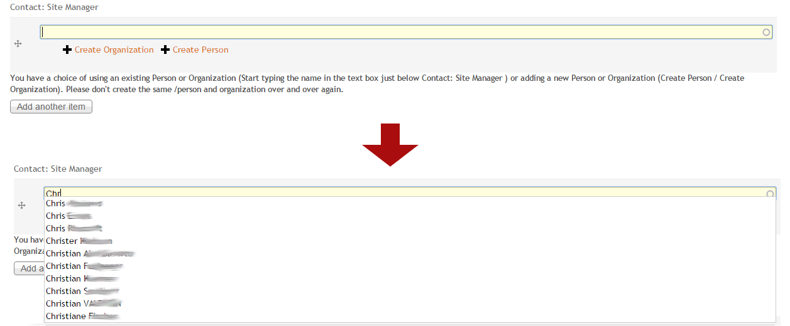
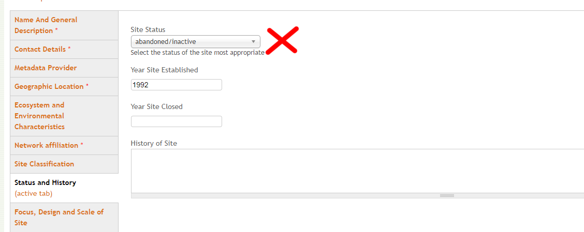

Adding or editing site information¶
Adding a site¶
Go to “Edit/Site/Add Site”
Adding content inline¶
Click “Create person” or “Create organisation” while editing a site or a dataset. Please don’t create the same person over and over again. Use the search field to look for already existing entries.

How is the site title constructed?¶
It is constructed using the information stored in the fields “site name” and “country”, which represents the country where the site is located.
The syntax for the title is: [site name] + [country]
Uploading images¶
When entering site information you can upload images. Go to the tab “Name And General Description”. At the bottom of the page you will find the upload form. Select one or multiple images and upload them.
Adding a new network/project¶
New networks or projects can’t be added by users. Please contact us if you want your network/project to be added.
Publishing content¶
Until you “publish” your site it won’t be visible the other users than you. You can publish your content by editing your site and hitting the “publish” button at the bottom of the form.
You can find all of your sites, both published and unpublished under Edit/Site/My sites
Setting a site to inactive¶
Set the field “site status” to “abandoned/inactive”. A new field will appear where you can indicate when the site closed down.

Editing the accreditation status¶
Editing the accreditation status can only be done by national network managers
- Log in as a user with the your national account
- Go to Network/Management/Site Accreditation
- Type in your password
- Select your site(s)
- Click “Choose Operation”
- Select the action you want to take:
- Set the status to potential or
- Set the status to formal
- Set the status to rejected
- Click “Execute”